OTOKUBOY — お金・トラベル・福袋・初売りの記事
お金

MONEY
締切と最安が一目でわかる、お金の早見表。ふるさと納税・セール・ポイント・税と制度・スマホ料金。
企業
解説

BUSINESS
あの会社はなぜ儲かるのか。決算と公式資料から、もうけのしくみを分解します。
資格
解説

LICENSE
資格試験のしくみと出るところを、マルバツで覚える。まずは FP3級から。
トラベル

TRAVEL
おすすめの宿、旅先の見どころ、セールやマイルなど、旅の計画と予約に役立つ情報をまとめます。
特集

FEATURE
福袋の中身・予約・抽選と、初売りの期間・条件をブランドごとに紹介します。
アプリ
APPS
つくっているアプリの紹介とアップデート。ダイビングゲーム・お酒図鑑・筋トレクエスト・Tabi Note。
NEW新着の記事
62本
楽天ETCカード年会費の判定月初年度と次年度で異なる 2026-11-27・税・制度・NISA年末調整の訂正はいつまで？会社で直せる期限と確定申告のやり方JCBの繰上返済支払区分で方法が変わる発行会社と入金費用を確認
2026-11-27・税・制度・NISA年末調整の訂正はいつまで？会社で直せる期限と確定申告のやり方JCBの繰上返済支払区分で方法が変わる発行会社と入金費用を確認 2026-11-27・クレジットカードJCBの繰上返済のやり方は？ATM・銀行振込・引落を比較住宅ローン控除初年度は会社員も確定申告借入先の方式で書類が変わる2026-11-27・税・制度・NISA住宅ローン控除の初年度の必要書類は？確定申告の準備と手順
2026-11-27・クレジットカードJCBの繰上返済のやり方は？ATM・銀行振込・引落を比較住宅ローン控除初年度は会社員も確定申告借入先の方式で書類が変わる2026-11-27・税・制度・NISA住宅ローン控除の初年度の必要書類は？確定申告の準備と手順 2026-11-27・勉強法・試験対策非課税は生涯1800万FP3級のNISA新制度と預金・証券の保護制度まとめドコモのプラン変更、オンラインと窓口どっち？11月30日締切で仕分け残り3日で仕分け
2026-11-27・勉強法・試験対策非課税は生涯1800万FP3級のNISA新制度と預金・証券の保護制度まとめドコモのプラン変更、オンラインと窓口どっち？11月30日締切で仕分け残り3日で仕分け 2026-11-26・旅行先ガイド門と石垣を歩く大阪城公園のおすすめ散策、大手門から桜門を抜けて駅へ歩くネット通販の返品まず返品特約を確認明示がなければ受取日を含む8日以内が原則
2026-11-26・旅行先ガイド門と石垣を歩く大阪城公園のおすすめ散策、大手門から桜門を抜けて駅へ歩くネット通販の返品まず返品特約を確認明示がなければ受取日を含む8日以内が原則 2026-11-26・福袋・セールネット通販の返品はいつまで？返品特約と送料を確認する手順福袋2027 カフェ・食べ物9社の期限と中身ミスドは12/11から2026-11-26・福袋・セール福袋2027 カフェ・食べ物9社の期限と中身｜ミスドは12月11日から
2026-11-26・福袋・セールネット通販の返品はいつまで？返品特約と送料を確認する手順福袋2027 カフェ・食べ物9社の期限と中身ミスドは12/11から2026-11-26・福袋・セール福袋2027 カフェ・食べ物9社の期限と中身｜ミスドは12月11日から 2026-11-26・勉強法・試験対策破綻でも地震保険100%FP3級の地震保険・自賠責保険、限度額と補償割合まとめ
2026-11-26・勉強法・試験対策破綻でも地震保険100%FP3級の地震保険・自賠責保険、限度額と補償割合まとめ 2026-11-26・業界・競合比較儲け方の形が違うコカ・コーラとペプシの違いは儲け方｜利益率28.7%と12.2%
2026-11-26・業界・競合比較儲け方の形が違うコカ・コーラとペプシの違いは儲け方｜利益率28.7%と12.2% 2026-11-25・ビジネスモデル大口撤退で生まれ変わったヤマト運輸の宅急便、どう誕生したのか 大口をやめた理由2026-11-25・旅行先ガイドはね橋と赤れんが門司港レトロの散策ルート、はね橋の時間と旧門司税関の回り方
2026-11-25・ビジネスモデル大口撤退で生まれ変わったヤマト運輸の宅急便、どう誕生したのか 大口をやめた理由2026-11-25・旅行先ガイドはね橋と赤れんが門司港レトロの散策ルート、はね橋の時間と旧門司税関の回り方 2026-11-25・福袋無料券を検算マクドナルド福袋2027は元が取れる？無料券10枚を公式価格で検算
2026-11-25・福袋無料券を検算マクドナルド福袋2027は元が取れる？無料券10枚を公式価格で検算 2026-11-25・旅行先ガイド入苑無料京都御苑の散策コース、丸太町と今出川から展示や御所を巡るくら寿司22商品値上げ・34商品値下げ11月27日から
2026-11-25・旅行先ガイド入苑無料京都御苑の散策コース、丸太町と今出川から展示や御所を巡るくら寿司22商品値上げ・34商品値下げ11月27日から 2026-11-25・福袋・セールくら寿司の値上げは11月27日から、値下げも含む価格改定一覧福袋2027の週次まとめ本日ビックカメラ抽選締切ケンタは明日11/26まで2026-11-25・福袋・セール福袋2027まとめ｜本日ビックカメラ抽選締切、ケンタは明日ドコモ値上げは12月1日から年16,500円増2026-11-25・スマホ・通信ドコモ値上げは12月1日から｜家族4人で年16,500円増、移り先で消す預金保険制度銀行ごとに合算一般預金等は元本1,000万円まで
2026-11-25・福袋・セールくら寿司の値上げは11月27日から、値下げも含む価格改定一覧福袋2027の週次まとめ本日ビックカメラ抽選締切ケンタは明日11/26まで2026-11-25・福袋・セール福袋2027まとめ｜本日ビックカメラ抽選締切、ケンタは明日ドコモ値上げは12月1日から年16,500円増2026-11-25・スマホ・通信ドコモ値上げは12月1日から｜家族4人で年16,500円増、移り先で消す預金保険制度銀行ごとに合算一般預金等は元本1,000万円まで 2026-11-25・税・制度・NISA預金保険の1000万円は銀行ごと？支店・定期預金の合算を解説Ankerブラックフライデー2026全25商品の価格表と最大53%OFFの正体11/27 0:00〜12/7 23:592026-11-24・クレジットカード楽天PINKカードの違いは？楽天カードと年会費・有料優待を比較
2026-11-25・税・制度・NISA預金保険の1000万円は銀行ごと？支店・定期預金の合算を解説Ankerブラックフライデー2026全25商品の価格表と最大53%OFFの正体11/27 0:00〜12/7 23:592026-11-24・クレジットカード楽天PINKカードの違いは？楽天カードと年会費・有料優待を比較 2026-11-24・福袋本日応募開始マクドナルド福袋2027は4200円｜中身・当選確約券を解説生命保険料控除一般の新契約は上限6万円23歳未満の扶養親族がいる場合
2026-11-24・福袋本日応募開始マクドナルド福袋2027は4200円｜中身・当選確約券を解説生命保険料控除一般の新契約は上限6万円23歳未満の扶養親族がいる場合 2026-11-24・税・制度・NISA生命保険料控除の上限2026年版、23歳未満の扶養で変わる額
2026-11-24・税・制度・NISA生命保険料控除の上限2026年版、23歳未満の扶養で変わる額 2026-11-24・ビジネスモデル20年売らず経営破綻コダック倒産の理由は？発明から20年売らなかった代償
2026-11-24・ビジネスモデル20年売らず経営破綻コダック倒産の理由は？発明から20年売らなかった代償 2026-11-24・旅行先ガイド芝生と震災の記憶神戸・三宮の東遊園地へ歩くなら、駅の出口と園内の立ち寄り方
2026-11-24・旅行先ガイド芝生と震災の記憶神戸・三宮の東遊園地へ歩くなら、駅の出口と園内の立ち寄り方 2026-11-24・勉強法・試験対策社会保険と年金の基本FP3級の社会保険・年金の基本とFPの法律の境界線ドコモ11月30日までの手続きまとめ11/30に3締切2026-11-24・スマホ・通信ドコモ11月30日までの手続きまとめ｜ミニ・大盛り・ワンコインセルフメディケーション税制医療費控除と比較控除額で選ぶ
2026-11-24・勉強法・試験対策社会保険と年金の基本FP3級の社会保険・年金の基本とFPの法律の境界線ドコモ11月30日までの手続きまとめ11/30に3締切2026-11-24・スマホ・通信ドコモ11月30日までの手続きまとめ｜ミニ・大盛り・ワンコインセルフメディケーション税制医療費控除と比較控除額で選ぶ 2026-11-23・税・制度・NISAセルフメディケーション税制と医療費控除の違い、控除額で選ぶ方法ふるさと納税サイト比較2026差は最大8,000円
2026-11-23・税・制度・NISAセルフメディケーション税制と医療費控除の違い、控除額で選ぶ方法ふるさと納税サイト比較2026差は最大8,000円 2026-11-23・ふるさと納税ふるさと納税サイト比較2026｜寄付額別の実質還元早見表
2026-11-23・ふるさと納税ふるさと納税サイト比較2026｜寄付額別の実質還元早見表 2026-11-23・勉強法・試験対策持ち物は原本だけFP3級の勉強法、6分野の順番とCBT当日の持ち物
2026-11-23・勉強法・試験対策持ち物は原本だけFP3級の勉強法、6分野の順番とCBT当日の持ち物 2026-11-22・福袋12月10日予約締切タリーズ福袋2027の予約は12月10日まで、中身と店頭受取
2026-11-22・福袋12月10日予約締切タリーズ福袋2027の予約は12月10日まで、中身と店頭受取 2026-11-22・福袋11月25日当選発表スターバックス福袋2027は受付終了、当選発表日と決済期限
2026-11-22・福袋11月25日当選発表スターバックス福袋2027は受付終了、当選発表日と決済期限 2026-11-22・おすすめホテル仙台駅東口直結ホテルメトロポリタン仙台イーストのアクセスと客室の選び方
2026-11-22・おすすめホテル仙台駅東口直結ホテルメトロポリタン仙台イーストのアクセスと客室の選び方 2026-11-22・福袋12月20日予約期限プロント福袋2027の予約は12月20日まで、パンどろぼうの中身年末の実効還元率楽天とAmazonの上限楽天8,500pt・Amazon10,000pt2026-11-22・ポイント・還元年末ブラックフライデー還元率比較｜楽天とAmazonの上限
2026-11-22・福袋12月20日予約期限プロント福袋2027の予約は12月20日まで、パンどろぼうの中身年末の実効還元率楽天とAmazonの上限楽天8,500pt・Amazon10,000pt2026-11-22・ポイント・還元年末ブラックフライデー還元率比較｜楽天とAmazonの上限 2026-11-22・福袋11月25日15時モスバーガー福袋2027は11月25日予約開始、受取日と中身
2026-11-22・福袋11月25日15時モスバーガー福袋2027は11月25日予約開始、受取日と中身 2026-11-22・旅行先ガイド駅から徒歩観光松島観光の徒歩モデルコース、松島海岸駅から瑞巌寺と五大堂へ
2026-11-22・旅行先ガイド駅から徒歩観光松島観光の徒歩モデルコース、松島海岸駅から瑞巌寺と五大堂へ 2026-11-22・福袋通販抽選11月30日カルディ福袋2027の抽選はいつまで？オンラインと店頭の申込方法
2026-11-22・福袋通販抽選11月30日カルディ福袋2027の抽選はいつまで？オンラインと店頭の申込方法 2026-11-22・福袋公式で完売ゴンチャ福袋2027は完売、購入済みの方の配送日とチケットふるさと納税の上限額所得割額の2割特例控除の上限2026-11-22・ふるさと納税ふるさと納税の上限額、計算方法を総務省の公式資料で確認2026-11-22・福袋店頭予約12月25日ドトール福袋2027の予約はいつまで？シナモロールなど全9種スマホの乗り換え（MNP）手数料は無料2026-11-21・スマホ・通信携帯電話の乗り換えMNP、やり方と手数料ふるさと納税12月31日まで年内に支払い完了2026-11-21・ふるさと納税ふるさと納税、12月31日までにやることクレジットカード締め日・支払日カード会社3社を比較2026-11-21・クレジットカードクレジットカードの締め日・支払い日、3社で比較Amazon × d払い100%還元抽選5,000名・12/7まで
2026-11-22・福袋公式で完売ゴンチャ福袋2027は完売、購入済みの方の配送日とチケットふるさと納税の上限額所得割額の2割特例控除の上限2026-11-22・ふるさと納税ふるさと納税の上限額、計算方法を総務省の公式資料で確認2026-11-22・福袋店頭予約12月25日ドトール福袋2027の予約はいつまで？シナモロールなど全9種スマホの乗り換え（MNP）手数料は無料2026-11-21・スマホ・通信携帯電話の乗り換えMNP、やり方と手数料ふるさと納税12月31日まで年内に支払い完了2026-11-21・ふるさと納税ふるさと納税、12月31日までにやることクレジットカード締め日・支払日カード会社3社を比較2026-11-21・クレジットカードクレジットカードの締め日・支払い日、3社で比較Amazon × d払い100%還元抽選5,000名・12/7まで 2026-11-21・ポイント・還元Amazonのd払い100%還元、上限5,000ptは抽選5,000名2026-11-20・税・制度・NISA電気ガス補助金はいつまで？12月の値上げと合わせ世帯別に試算2026-11-19・税・制度・NISA新NISAの年内枠を使い切る手順｜クレカ積立の締切後でも間に合う方法Amazonブラックフライデー2026エントリーは今日10時から対象は12/7まで2026-11-19・福袋・セールAmazonブラックフライデー2026、エントリーは今日10時開始
2026-11-21・ポイント・還元Amazonのd払い100%還元、上限5,000ptは抽選5,000名2026-11-20・税・制度・NISA電気ガス補助金はいつまで？12月の値上げと合わせ世帯別に試算2026-11-19・税・制度・NISA新NISAの年内枠を使い切る手順｜クレカ積立の締切後でも間に合う方法Amazonブラックフライデー2026エントリーは今日10時から対象は12/7まで2026-11-19・福袋・セールAmazonブラックフライデー2026、エントリーは今日10時開始 2026-11-18・試験概要・受験手続き合格率は8割超FP3級の試験のしくみ・費用・日程まとめ 合格ラインは6割
2026-11-18・試験概要・受験手続き合格率は8割超FP3級の試験のしくみ・費用・日程まとめ 合格ラインは6割
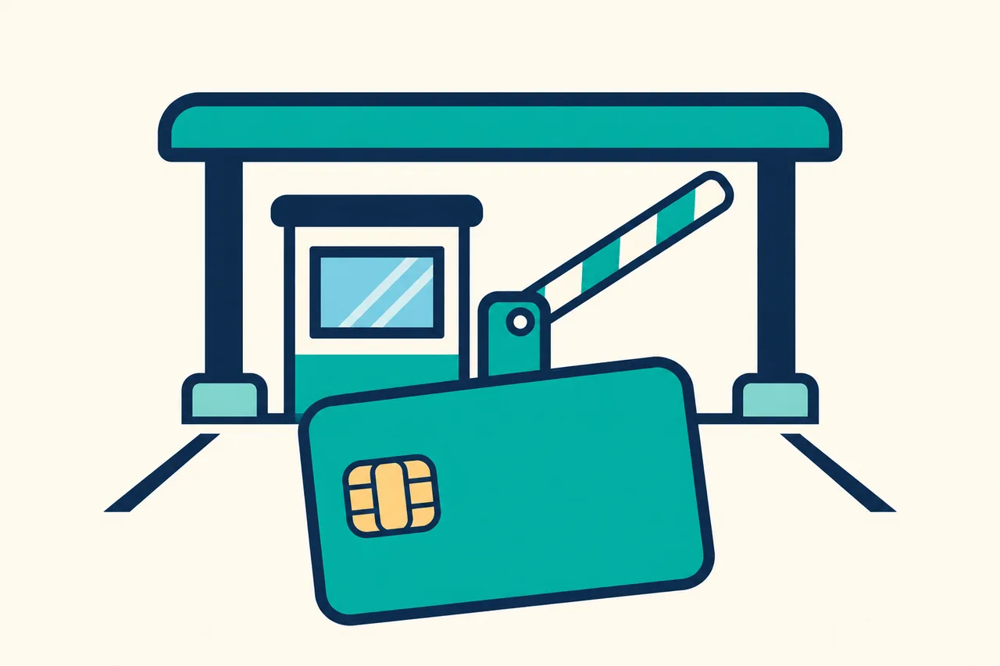
2026-11-28・クレジットカード楽天ETCカードの年会費が無料になる条件と請求月の確認方法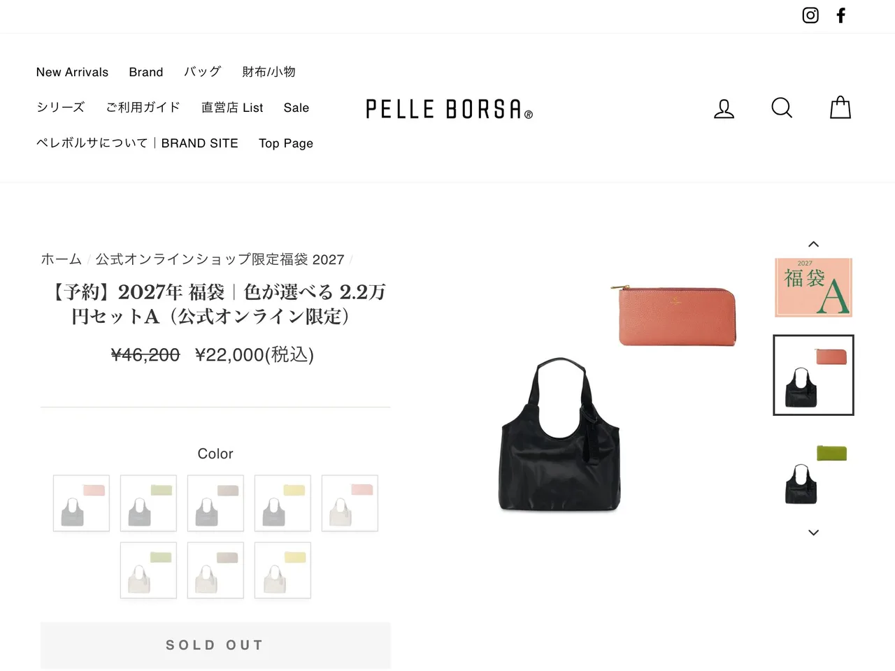
2026-11-28・福袋全5セット完売ペレボルサ福袋2027は全5セット完売｜価格・中身と前年比較年末調整の訂正源泉徴収票の交付前なら会社で直せる過ぎたら確定申告で5年間2026-11-27・税・制度・NISA年末調整の訂正はいつまで？会社で直せる期限と確定申告のやり方JCBの繰上返済支払区分で方法が変わる発行会社と入金費用を確認2026-11-27・クレジットカードJCBの繰上返済のやり方は？ATM・銀行振込・引落を比較住宅ローン控除初年度は会社員も確定申告借入先の方式で書類が変わる2026-11-27・税・制度・NISA住宅ローン控除の初年度の必要書類は？確定申告の準備と手順2026-11-27・勉強法・試験対策非課税は生涯1800万FP3級のNISA新制度と預金・証券の保護制度まとめドコモのプラン変更、オンラインと窓口どっち？11月30日締切で仕分け残り3日で仕分け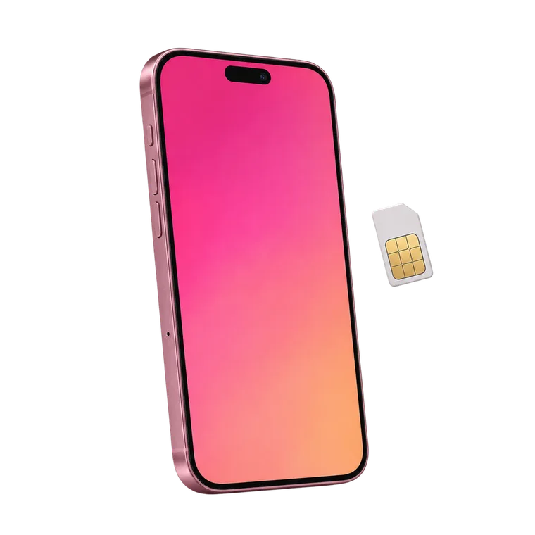
2026-11-27・スマホ・通信ドコモのプラン変更、オンラインと窓口どっち？11月30日締切で仕分け証券口座の乗っ取り10月は168件、9月の3.9倍今日やる対策3つ（無料・5分）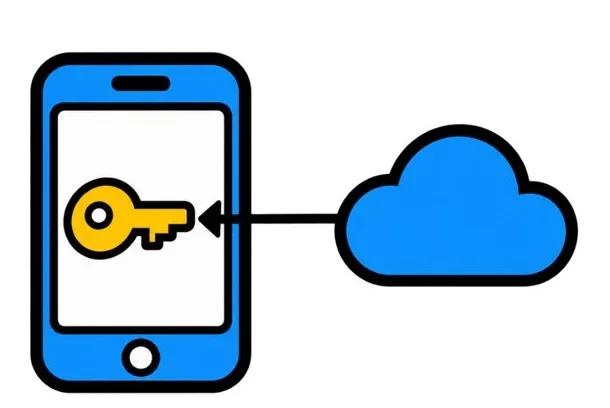
2026-11-26・税・制度・NISA証券口座の乗っ取り対策3つ｜10月は168件で9月の3.9倍に2026-11-26・旅行先ガイド門と石垣を歩く大阪城公園のおすすめ散策、大手門から桜門を抜けて駅へ歩くネット通販の返品まず返品特約を確認明示がなければ受取日を含む8日以内が原則2026-11-26・福袋・セールネット通販の返品はいつまで？返品特約と送料を確認する手順福袋2027 カフェ・食べ物9社の期限と中身ミスドは12/11から2026-11-26・福袋・セール福袋2027 カフェ・食べ物9社の期限と中身｜ミスドは12月11日から2026-11-26・勉強法・試験対策破綻でも地震保険100%FP3級の地震保険・自賠責保険、限度額と補償割合まとめ2026-11-26・業界・競合比較儲け方の形が違うコカ・コーラとペプシの違いは儲け方｜利益率28.7%と12.2%2026-11-25・ビジネスモデル大口撤退で生まれ変わったヤマト運輸の宅急便、どう誕生したのか 大口をやめた理由2026-11-25・旅行先ガイドはね橋と赤れんが門司港レトロの散策ルート、はね橋の時間と旧門司税関の回り方2026-11-25・福袋無料券を検算マクドナルド福袋2027は元が取れる？無料券10枚を公式価格で検算2026-11-25・旅行先ガイド入苑無料京都御苑の散策コース、丸太町と今出川から展示や御所を巡るくら寿司22商品値上げ・34商品値下げ11月27日から2026-11-25・福袋・セールくら寿司の値上げは11月27日から、値下げも含む価格改定一覧福袋2027の週次まとめ本日ビックカメラ抽選締切ケンタは明日11/26まで2026-11-25・福袋・セール福袋2027まとめ｜本日ビックカメラ抽選締切、ケンタは明日ドコモ値上げは12月1日から年16,500円増2026-11-25・スマホ・通信ドコモ値上げは12月1日から｜家族4人で年16,500円増、移り先で消す預金保険制度銀行ごとに合算一般預金等は元本1,000万円まで2026-11-25・税・制度・NISA預金保険の1000万円は銀行ごと？支店・定期預金の合算を解説Ankerブラックフライデー2026全25商品の価格表と最大53%OFFの正体11/27 0:00〜12/7 23:59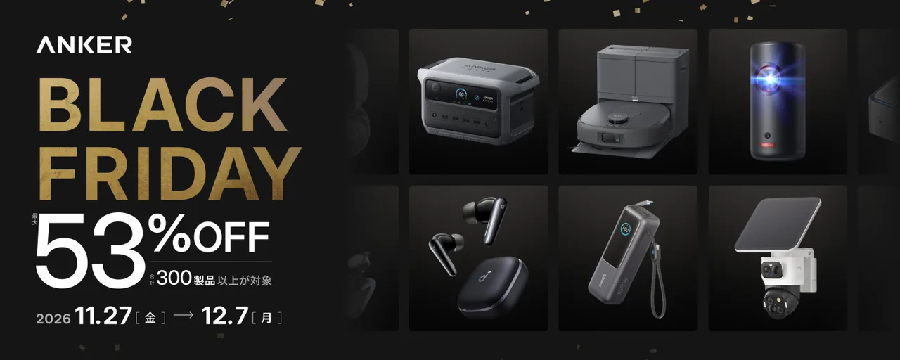
2026-11-25・福袋・セールAnkerブラックフライデー2026の価格表、全25商品と最大53%の正体楽天PINKカードカード年会費は永年無料有料優待は任意で申込み2026-11-24・クレジットカード楽天PINKカードの違いは？楽天カードと年会費・有料優待を比較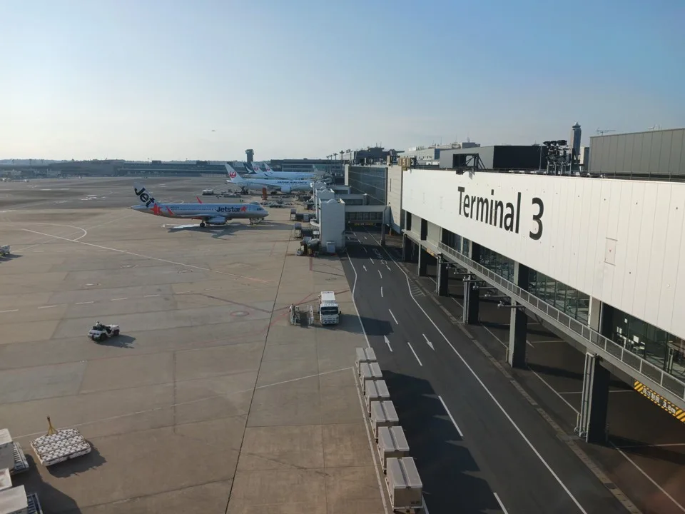
2026-11-24・お得な旅のしかた改札から約13分成田空港第3ターミナルへは何駅で降りる？徒歩と無料バスの行き方2026-11-24・福袋本日応募開始マクドナルド福袋2027は4200円｜中身・当選確約券を解説生命保険料控除一般の新契約は上限6万円23歳未満の扶養親族がいる場合2026-11-24・税・制度・NISA生命保険料控除の上限2026年版、23歳未満の扶養で変わる額2026-11-24・ビジネスモデル20年売らず経営破綻コダック倒産の理由は？発明から20年売らなかった代償2026-11-24・旅行先ガイド芝生と震災の記憶神戸・三宮の東遊園地へ歩くなら、駅の出口と園内の立ち寄り方2026-11-24・勉強法・試験対策社会保険と年金の基本FP3級の社会保険・年金の基本とFPの法律の境界線ドコモ11月30日までの手続きまとめ11/30に3締切2026-11-24・スマホ・通信ドコモ11月30日までの手続きまとめ｜ミニ・大盛り・ワンコインセルフメディケーション税制医療費控除と比較控除額で選ぶ2026-11-23・税・制度・NISAセルフメディケーション税制と医療費控除の違い、控除額で選ぶ方法ふるさと納税サイト比較2026差は最大8,000円2026-11-23・ふるさと納税ふるさと納税サイト比較2026｜寄付額別の実質還元早見表2026-11-23・勉強法・試験対策持ち物は原本だけFP3級の勉強法、6分野の順番とCBT当日の持ち物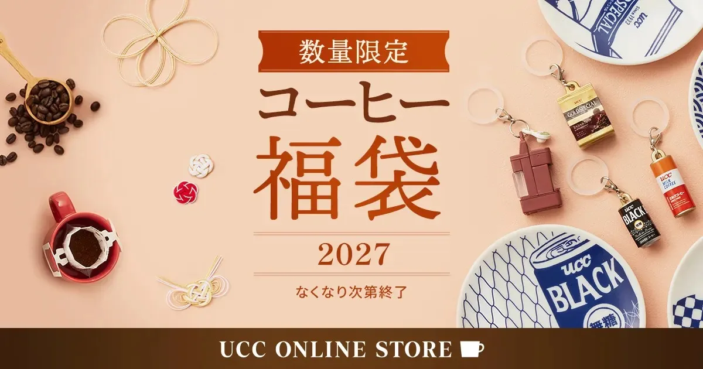
2026-11-22・福袋12月1日10時予約UCC福袋2027は公式通販で4種完売、次の予約は12月1日2026-11-22・福袋12月10日予約締切タリーズ福袋2027の予約は12月10日まで、中身と店頭受取2026-11-22・福袋11月25日当選発表スターバックス福袋2027は受付終了、当選発表日と決済期限2026-11-22・おすすめホテル仙台駅東口直結ホテルメトロポリタン仙台イーストのアクセスと客室の選び方2026-11-22・福袋12月20日予約期限プロント福袋2027の予約は12月20日まで、パンどろぼうの中身年末の実効還元率楽天とAmazonの上限楽天8,500pt・Amazon10,000pt2026-11-22・ポイント・還元年末ブラックフライデー還元率比較｜楽天とAmazonの上限2026-11-22・福袋11月25日15時モスバーガー福袋2027は11月25日予約開始、受取日と中身2026-11-22・旅行先ガイド駅から徒歩観光松島観光の徒歩モデルコース、松島海岸駅から瑞巌寺と五大堂へ2026-11-22・福袋通販抽選11月30日カルディ福袋2027の抽選はいつまで？オンラインと店頭の申込方法2026-11-22・福袋公式で完売ゴンチャ福袋2027は完売、購入済みの方の配送日とチケットふるさと納税の上限額所得割額の2割特例控除の上限2026-11-22・ふるさと納税ふるさと納税の上限額、計算方法を総務省の公式資料で確認2026-11-22・福袋店頭予約12月25日ドトール福袋2027の予約はいつまで？シナモロールなど全9種スマホの乗り換え（MNP）手数料は無料2026-11-21・スマホ・通信携帯電話の乗り換えMNP、やり方と手数料ふるさと納税12月31日まで年内に支払い完了2026-11-21・ふるさと納税ふるさと納税、12月31日までにやることクレジットカード締め日・支払日カード会社3社を比較2026-11-21・クレジットカードクレジットカードの締め日・支払い日、3社で比較Amazon × d払い100%還元抽選5,000名・12/7まで2026-11-21・ポイント・還元Amazonのd払い100%還元、上限5,000ptは抽選5,000名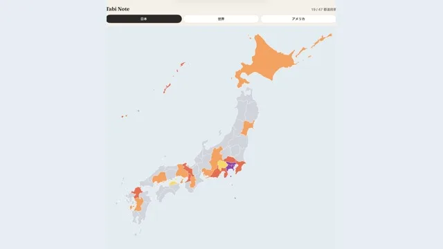
2026-11-20・旅記録無料Tabi Note とは？ 行った場所を地図に塗って残すアプリの使い方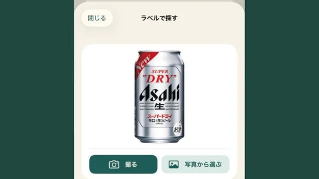
2026-11-20・お酒無料・登録不要お酒図鑑とは？飲んだお酒を記録して図鑑を埋めるアプリの使い方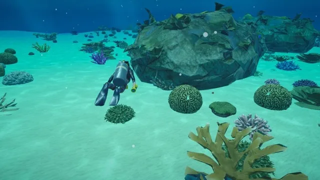
2026-11-20・ダイビング2つの海が無料Ocean Discovery とは？沖縄の海をもぐるダイビングゲームの遊び方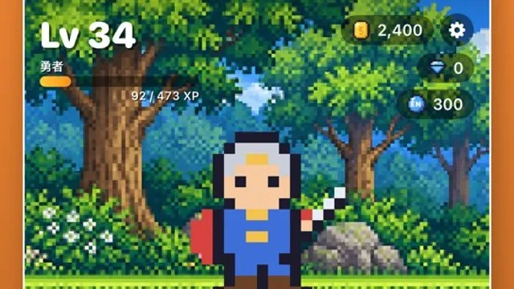
2026-11-20・筋トレ無料筋トレクエストとは？ 筋トレを記録すると勇者が育つアプリの使い方12月の電気・ガス代値上げと補助金世帯別に試算2026-11-20・税・制度・NISA電気ガス補助金はいつまで？12月の値上げと合わせ世帯別に試算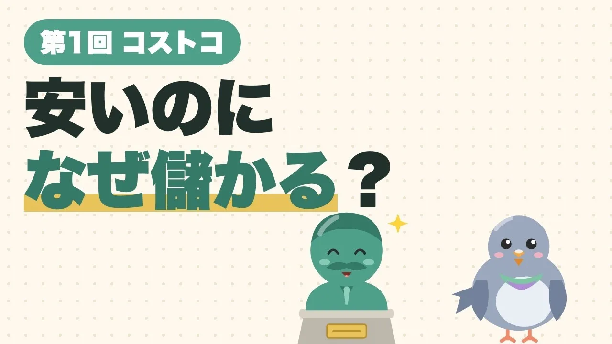
2026-11-20・ビジネスモデル営業利益の約半分が会費コストコはなぜ安いのに儲かるのか 営業利益の約半分は会費ヨドバシ福袋2027優遇条件の基準日は終了申込みは11/24 11時から2026-11-20・福袋・セールヨドバシ福袋2027の抽選日程、優遇条件の基準日は終了サンリオ福袋20274,990円全7キャラ共通2026-11-20・福袋・セールサンリオ福袋2027は全7キャラ4,990円で1人交代ゴディバ福袋2027価格据え置き中身が異なる全3種2026-11-20・福袋・セールゴディバ福袋2027は3種類、価格据え置きでも中身は変化Amazonブラックフライデー本番は8日間7つのセール企画2026-11-20・福袋・セールAmazonブラックフライデー2026、7つの企画の買い方新NISAの年内枠現金積立の締切SBI 12/16・楽天 12/172026-11-19・税・制度・NISA新NISAの年内枠を使い切る手順｜クレカ積立の締切後でも間に合う方法Amazonブラックフライデー2026エントリーは今日10時から対象は12/7まで2026-11-19・福袋・セールAmazonブラックフライデー2026、エントリーは今日10時開始2026-11-18・試験概要・受験手続き合格率は8割超FP3級の試験のしくみ・費用・日程まとめ 合格ラインは6割